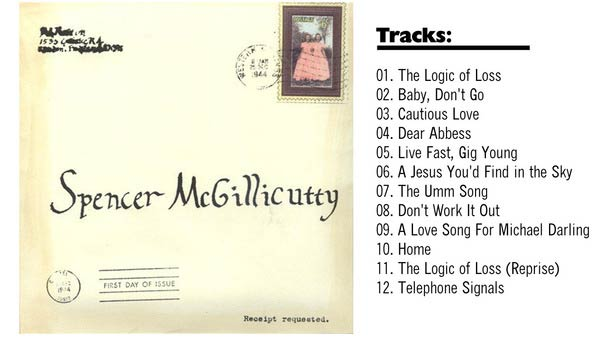

Keep up on the latest Spencer news!


© Copyright 2006-2012 Spencer McGillicutty
U.S. Release May 15th 2012.
Available later in Japan via: Fastcut Records
A reissue of the band's US album, the Japanese edition was released on Fastcut Records in August 18th, 2010! The release features new artwork, lyrics printed in two languages, and two bonus tracks from the acoustic debut album.
Available in Japan via: Fastcut Records
Includes Bonus Tracks from our first album: "Baby, Don't Go" and "Cautious Love"
Spencer McGillicutty's long-anticipated sophomore album was released September 13th, 2009. After years of loving care, they integrated full band instrumentation into the band's distinctive sound for a new batch of Spencer originals. "Games" is a giddy dose of pure pop drawing from 1960s traditions like girl groups, classic Brill Building songwriting and lush Beach Boys harmonies.
 Spencer McGillicutty's self-titled debut CD was released in December of 2006. It's a collection of original songs recorded as the group has performed them from the beginning: live, in one room with two acoustic guitars and four voices. The initial "pressing" featured real envelopes hand-stained by the band, with a letter and one of four photographs inside. Those limited edition discs have long since sold out.
Spencer was included on this stellar compilation album, assembled by Fastcut Records -- the same label that later released a Japanese edition of Spencer's album "Games"! Fastcut Records' first compilation album
Fastcut Records 初のコンピレーションCD。
遂にアルバム『A New Day』を完成させたKuryakinはネオ・アコースティック・モードなキラーM-6、愛すべきUSインディー・ポップ・バンド、Bearsはアルバム未収録のM-7、モッドでガーリーなドイツのデュオ、The Soulboy CollectiveはFastcutから7インチ・リリースされたグルーヴィーなM-8、9月に日本デビュー予定のSpencer McGillicuttyはアルバム『Games』からロジャニコ風ソフトロックM-9、先日の来日もすばらしかったスペインのガール・トリオ、Boat Beamは新作『Paper Birds』からの軽快なピアノ・ポップM-10。
(rough English translation here)
Spencer McGillicutty was featured on The Merci Mag's sampler disc (edition #003), assembled by ABCDEFG* Record. The magazine includes an interview with Spencer McGillicutty, as well as discussions of new fashion trends and copious photos of meat (!).
Tell everyone you love music, travel and photography and meat. Mania for indie pop culture crammed like a fool in the world! / 音楽と旅と写真と肉を愛する皆様おまたせしました。世界のインディーポップ文化をアホみたいに詰め込んだマニア向けCD＋ファンジン『メルシーマガジン』第3号です！
CD収録アーティストは、ついに日本デビューも決まったらしい60年代ポップ満載のスーパーポップグループSpencer McGillicutty、Vampire WeekendファンもイチコロなトロピカルテイストなCartridge、The Pains Of Being Pure At Heartのネクストブレイクと話題のLetting Up Despite Great Faults、元Manhattan Love SuicidesのCarolineとDarrenのニューバンドThe Blanche Hudson Weekend、カナダの大所帯インディポップバンドgreenbelt collective、日本からはKFC、opaluc（共に初音源！）などなどなど、世界のネクストブレイクな全11バンドを収録！今回も激ヤバ！
(rough English translation here)